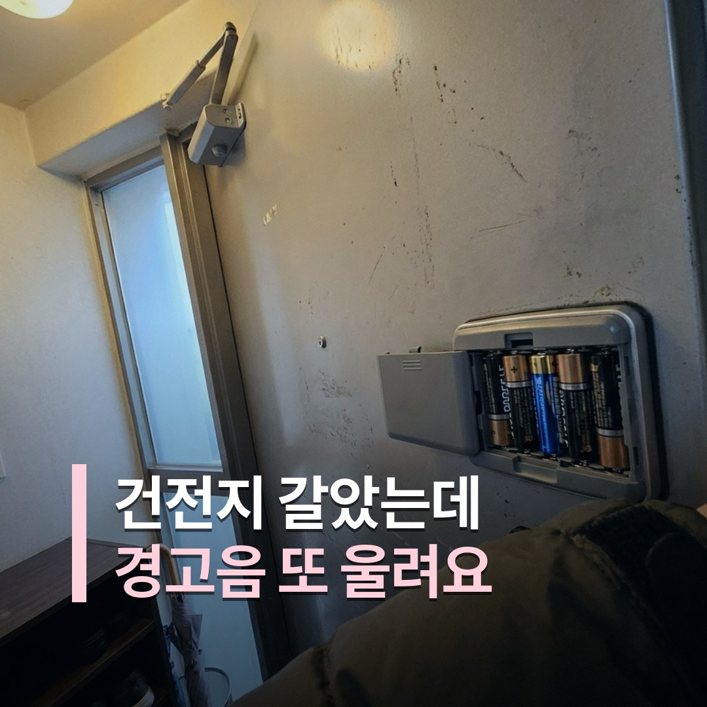
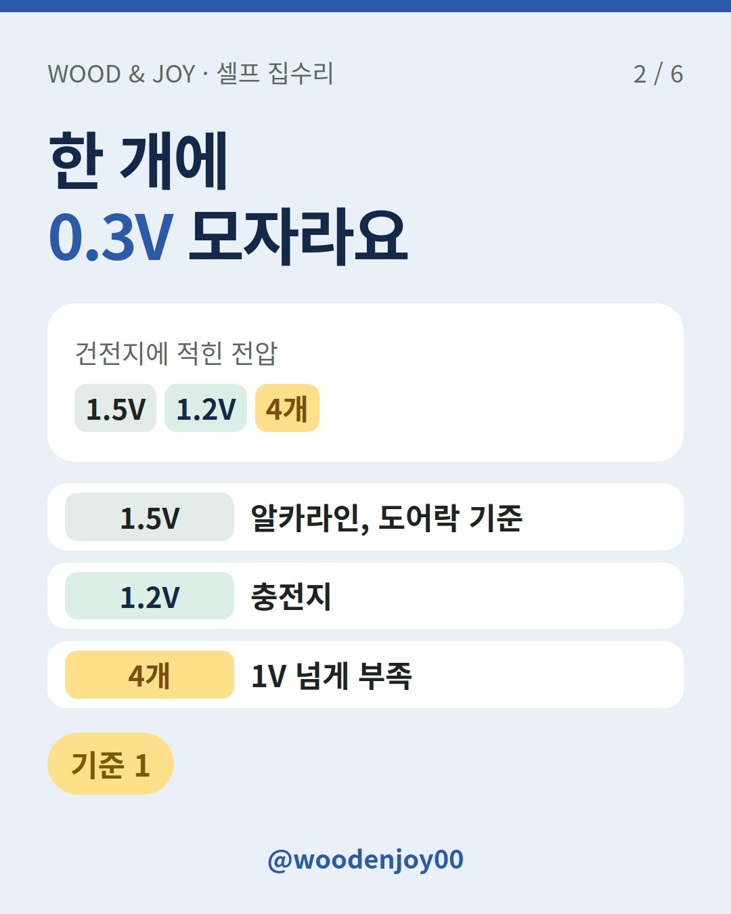
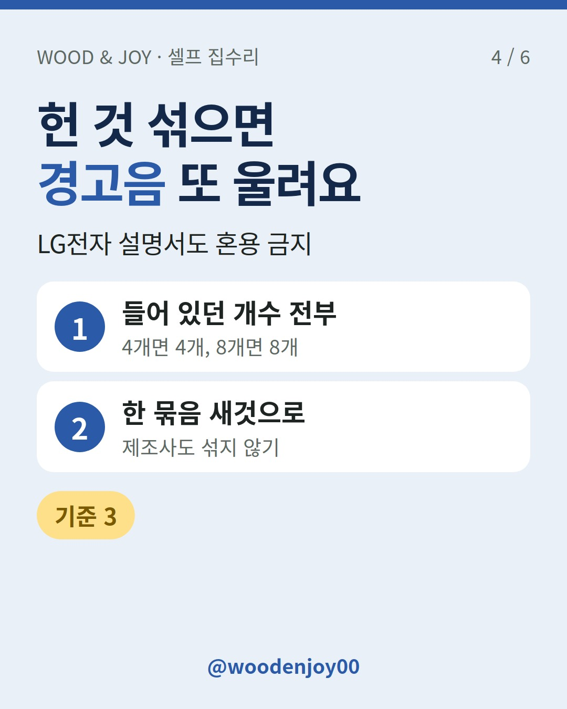

이 포스팅은 쿠팡 파트너스 활동의 일환으로, 이에 따른 일정액의 수수료를 제공받습니다.
도어락 건전지를 갈았는데 경고음이 또 울린다면 충전지를 넣었거나 헌 건전지를 섞었을 가능성부터 보세요. 게이트맨·LG전자·직방 스마트홈 모두 1.5V AA 알카라인을 안내해요.

충전지(니켈수소)는 1개에 1.2V이고, 도어락이 기준으로 삼는 알카라인은 1.5V예요. 4개를 넣으면 1V 넘게 모자라요. 그래서 다 쓰기도 전에 방전 경고가 떠요.
| 종류 | 1개 전압 | 4개 넣으면 | 도어락에 쓸 때 |
|---|---|---|---|
| 알카라인 | 1.5V | 6.0V | 게이트맨·LG전자·직방 스마트홈 안내 기준 |
| 충전지(니켈수소) | 1.2V | 4.8V | 기준보다 1.2V 낮아 경고음이 빨리 울릴 수 있어요 |
| 망간·리튬 | - | - | 직방 스마트홈은 사용 금지 |
직방 스마트홈은 망간·리튬·충전식 건전지를 쓰지 말라고 안내해요. 모델마다 다르니 설명서나 건전지함 표기를 먼저 보세요.

들어 있는 것과 같은 규격을 같은 개수만큼 사면 돼요. 게이트맨은 AA 4개 또는 8개, 직방 스마트홈은 모델에 따라 4~8개예요. AAA를 쓰는 제품도 있으니 하나 빼서 표기를 보세요.
안 돼요. 쓰던 것과 새것, 제조사가 다른 것을 섞으면 남은 양이 적은 쪽에 맞춰 전체가 빨리 떨어져요. LG전자 설명서에도 혼용하지 말라고 적혀 있어요.

외부 비상전원 단자에 9V 사각 건전지를 대면 열리는 모델이 있어요. 키패드 아래·옆·바닥 면에서 단자를 찾아 문이 열릴 때까지 대고 있으세요. 반응이 없으면 방향을 반대로 돌려 보세요. 들어가자마자 실내 건전지를 갈면 돼요.
셀프는 여기까지예요. 9V를 대도 반응이 없거나 새 건전지에도 경고음이 계속되면 본체 문제일 수 있어요. 뜯지 말고 제조사 고객센터에 연락하세요.
기온이 낮으면 건전지 성능이 떨어져요. 게이트맨 기준 하루 10회 쓰면 약 1년인데, 온도·습도·사용 횟수에 따라 짧아질 수 있어요. 경고음이 울렸다면 그 주 안에 바꾸세요.
👉 AA 알카라인 건전지 1.5V — AA 표기, 4개·8개 들어가는 도어락
👉 AAA 알카라인 건전지 1.5V — AAA 표기가 있는 작은 도어락
👉 9V 사각 알카라인 건전지 — 외부 9V 단자가 있는 도어락의 비상용
Q. 리튬은 추위에 강하다던데요?
직방 스마트홈은 리튬 사용을 금지해요. 내 도어락 설명서에서 허용하는지부터 확인하세요.
여러분 집 도어락은 4개짜리인가요, 8개짜리인가요? 댓글로 알려 주세요.
본체를 바꿀 생각이면 현관문 도어락 교체, 사 놓고 구멍 안 맞는 집은 3곳을 안 쟀어요, 문이 덜 닫혀 잠금이 헛돈다면 도어클로저 속도 조절, 현관문이 덜 닫힐 때 나사 2개만 보세요도 보세요.